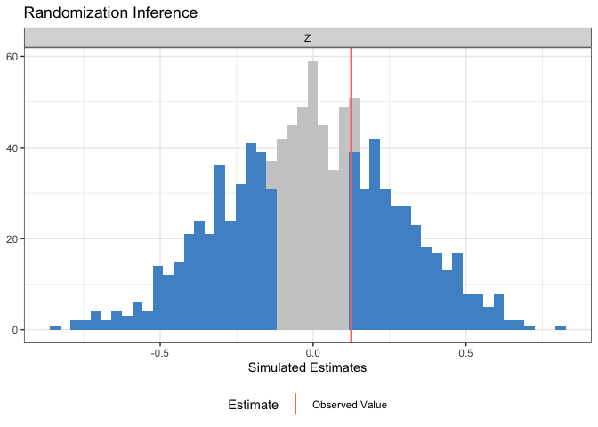

ri2 makes conducting randomization inference easy and (with the blessing of the original authors) is the successor package to ri.
ri2 has specific support for the following:
- All randomization schemes in randomizr.
- Difference-in-means and OLS-adjusted estimates of ATE estimates using R-native formula syntax.
- Multi-arm trials.
- ANOVA-style hypothesis tests (e.g., testing interaction term under null of constant effects),
Additionally, ri2 provides:
- Accommodation for arbitrary randomization schemes
- Accommodation for arbitrary (scalar) test statistics
ri2 is on CRAN:
install.packages("ri2")If you’d like to install the most current development release, you can use the following code:
install.packages("devtools")
devtools::install_github("acoppock/ri2")Here is the basic syntax for a two-arm trial:
library(ri2)
N <- 100
declaration <- declare_ra(N = N, m = 50)
Z <- conduct_ra(declaration)
X <- rnorm(N)
Y <- .9 * X + .2 * Z + rnorm(N)
dat <- data.frame(Y, X, Z)
ri_out <-
conduct_ri(
formula = Y ~ Z,
declaration = declaration,
assignment = "Z",
sharp_hypothesis = 0,
data = dat
)
plot(ri_out)
summary(ri_out)
#> term estimate two_tailed_p_value
#> 1 Z 0.1235293 0.658The development of ri2 is supported by a Standards Grant from EGAP.